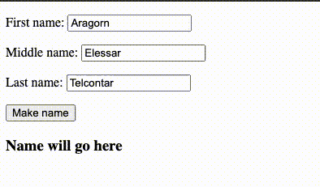

17 JS with html
As we have worked on JavaScript so far, it has been a bit academic … there has been no action on our web page. Let’s change that, and marry our JavaScript to our HTML and make our our page do something.
17.1 The Document Object Model
JavaScript is aware of all the HTML on your web page, and each element becomes a JavaScript object. This concept, called the Document Object Model — or DOM, for short — is a standard for how to get, change, add, or delete HTML elements using JavaScript.
The DOM allows us to connect our JavaScript functions to HTML or CSS on the page.
17.2 Our goal
We will create an HTML form that allows a user to enter their first, middle and last name, and when they press a button it will display the full name elsewhere on the webpage. An overview of steps:
- Create a new html page.
- Introduce form elements through text boxes and a button.
- Copy our
makeBetterNamefunction from our previous exercise. - Modify that function to use elements from the form and update HTML on the page.
- Connect the form button to the makeBetterName function.
It will end up working like this:

Now let’s get down to the detail.
17.3 Create our page
- Inside the same
yourname-javascriptrepo we have been working in, create a new file calledform.htmland open it in VS Code. - Enter the HTML5 boilerplate code. Remember that you can use Emmet to create this by typing
htmland then use the dropdown to choosehtml:5. Don’t capitalizehtml. - In between the tags of the document, add the following HTML code. I’ll explain afterward:
<form id="nameForm">
<p>First name: <input type="text" name="first" value="Aragorn"></p>
<p>Middle name: <input type="text" name="middle" value="Elessar"></p>
<p>Last name: <input type="text" name="last" value="Telcontar"></p>
<input type="button" value="Make name">
</form>
<h3 id="nameHead">Name will go here</h3>- Save your file and use Go Live to start a live server.
We’ve introduced several new HTML elements here that we haven’t used before.
- Forms provide a way for HTML pages to collect user input. We’ve given our form and id of
nameFormso we can target it with JavaScript later. - Input elements define how we can provide the input. We have three inputs with
type="text", which gives us a text box. We have given each anameattribute, which we can access as a “property” of the form element with JavaScript. We also defined a defaultvalueto display text until we type something else in. - Lastly, we have a
type="button"input, which we will use to fire our JavaScript function. (If you click on the button now, it doesn’t do anything. Yet.)
17.4 Copy our function
- Copy the
<script>tag below and place it between our form element and the closing</body>tag on the page.
Here is the code:
<script>
function makeBetterName(fName, mName, lName) {
if (mName.length === 1) {
mName = mName + ".";
}
let fullName = fName + " " + mName + " " + lName;
return fullName;
}
</script>This is a copy of our makeBetterName function from the last exercise. We’ll now refactor it to meet our needs here.
17.5 Modify our function
There are couple of logic changes we need to make to our function to work with our form.
- Instead of us sending name values into the function with console.log, we need the function to grab the values from our text inputs in the form.
- Instead of returning our fullName value to the console.log, we want to replace the text in our
<h3>tag so we can see it happen on the page.
17.5.1 getElementById
Using the Document Object Model, we can find any named element on our HTML page. Once we “have” that object, we can find its various properties, like how long it is, or the contents of the tag, etc.
The easiest way to do this is with document.getElementByID("id_name_here"). Once we “have” the element, we can access its properties and methods. Using this, we can “get” the contents of the forms and put them into variables in our function.
- In our
makeBetterName()function, remove the three arguments inside the parenthesis. - Add the following three lines inside the function before the IF in your
makeBetterNamefunction:
let fName = document.getElementById("nameForm").first.value;
let mName = document.getElementById("nameForm").middle.value;
let lName = document.getElementById("nameForm").last.value;What we are doing here is instead of feeding our names into the function through arguments, we are using document.getElementByID to find and get the “nameForm” element, and then we are accessing each input by its “name” property (i.e. .first). The property .value gives us the text of that is inside that input.
- Now, after the function, add a console.log that calls the function, but don’t feed it names like we did before:
console.log(makeBetterName());You should be able to save your file, refresh your browser and see King Aragorn’s name in the Console.
OK, we’ve solved our first challenge of pulling the names from our fields. Now let’s update our <h3 id="nameHead"> from our function.
17.5.2 innerHTML
We can not only pluck the value of a field with getElementByID, but we can also change existing text by using the .innerHTML property.
- In our function, replace the line
return fullName;with this:
document.getElementById("nameHead").innerHTML = fullName;- Save your file and refresh yor page, and now the
<h3>tag (which hasid="nameHead") that used to say “Name will go here” should now have our default form text: “Aragorn Elessar Telcontar”.
This new line of code uses the same DOM method getElementByID to identify the HTML element we wanted, but this time we used the .innterHMTL property to shove content into it. What content was that? It’s the contents of the fullName which now comes from our text boxes on the page.
17.6 Commit your change to Github
Make sure you save and commit your changes to git.